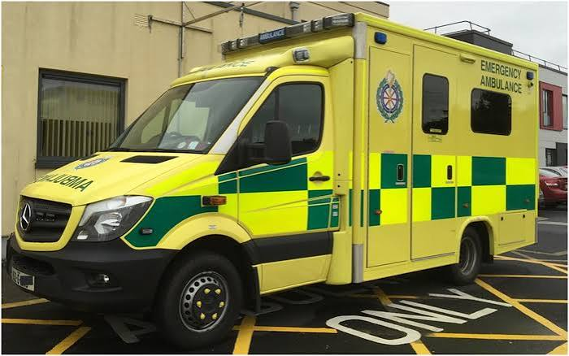
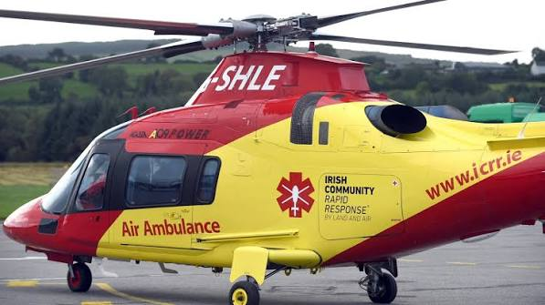

Clinical learning for the people delivering care before the hospital door.
Evidence-led teaching, real-world case discussion and a trusted professional community for paramedics, advanced paramedics, doctors, nurses, EMTs, educators and students across Ireland.
Designed around how clinicians actually learn.
Grand rounds should not end when the presentation finishes. The platform connects live teaching, recorded learning, reflective practice and peer discussion.
Live grand rounds
Scheduled online and in-person teaching led by clinicians, educators and subject-matter experts.
E-learning modules
Structured modules with objectives, knowledge checks, completion records and certificates.
Clinical resources
Guidelines, journal summaries, infographics, checklists and practical reference material.
Case-based learning
De-identified cases that explore decision-making, human factors and system learning.
Professional discussion
Moderated topic forums for respectful multidisciplinary debate and shared learning.
Personal CPD record
Track learning, reflections, assessments and evidence in a secure member profile.


Learn from real clinical decisions.
Cases are structured to focus on reasoning rather than hindsight. Each discussion can examine assessment, differential diagnosis, treatment, communication, transport decisions, clinical governance and system factors.
Help build Ireland’s pre-hospital learning community.
Join as a founding member, contributor, speaker or reviewer.